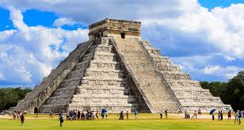
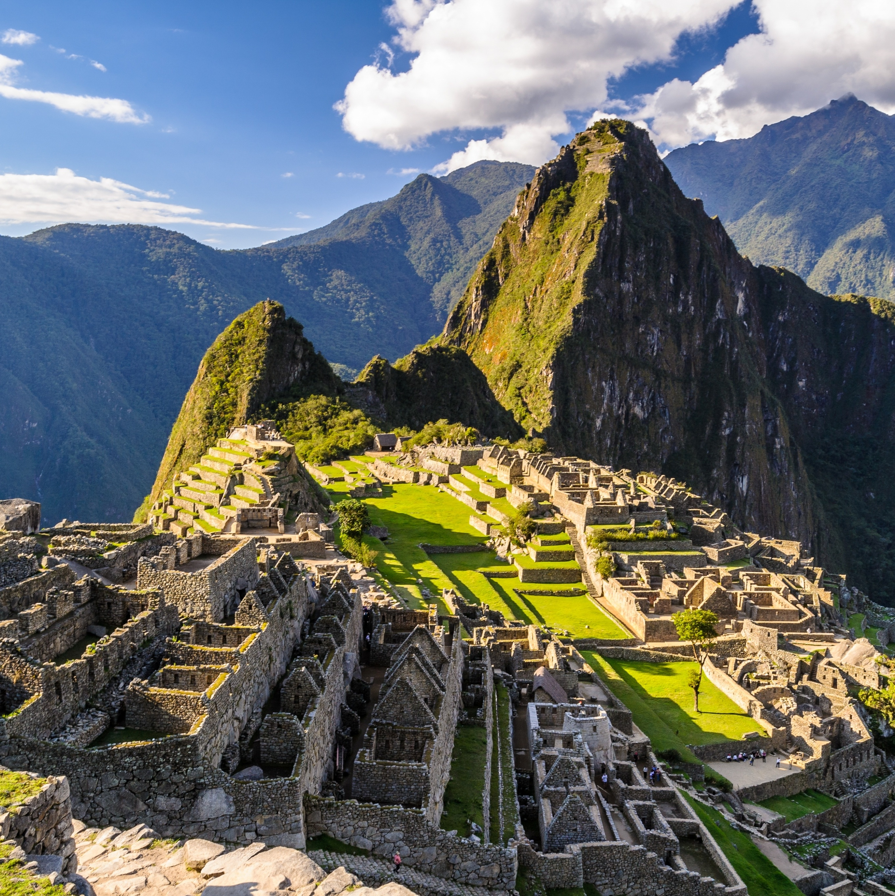
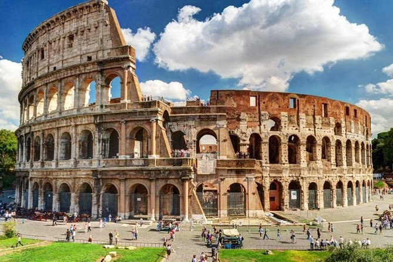
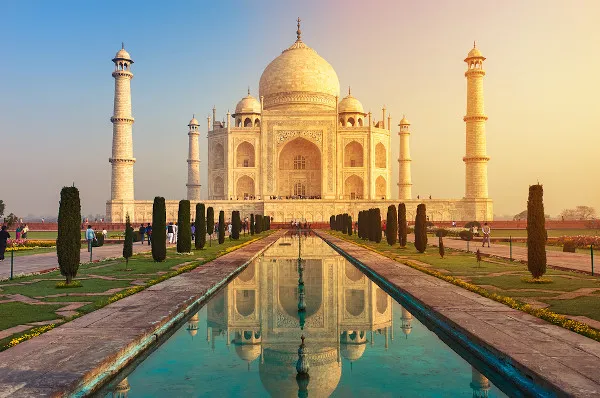

As 7 Maravilhas do Mundo Moderno
As 7 Maravilhas do Mundo Moderno são monumentos icônicos construídos em diferentes partes do mundo após o ano 1000 d.C., representando a engenhosidade e a diversidade cultural da humanidade. Eleitas em 2007 por votação global, elas incluem estruturas na Ásia, América do Sul, América Central, Europa e Oriente Médio, destacando-se por sua importância histórica, cultural e arquitetônica. Essas maravilhas continuam a ser símbolos de identidade nacional e destinos turísticos de grande relevância mundial.
Essa são as 7 Maravilhas do Mundo Moderno:
-
Grande Muralha da China
A Grande Muralha da China começou a ser construída no século III a.C., durante o reinado de Qin Shi Huang, com o objetivo de proteger o território chinês de invasões. Ela unificou várias muralhas regionais existentes, formando uma barreira defensiva contra povos nômades como os Xiongnu.
Ao longo das dinastias, especialmente durante a dinastia Ming (1368-1644), a muralha foi expandida e fortificada, atingindo cerca de 21.196 quilômetros de extensão. Composta de terra, tijolos e pedras, a muralha incluía torres de vigilância e servia tanto como defesa quanto para controle do comércio na Rota da Seda.
Hoje, a Grande Muralha é um símbolo icônico da China e um Patrimônio Mundial da UNESCO, atraindo milhões de visitantes anualmente. Mesmo com partes em ruínas, ela representa a engenhosidade e a resiliência da civilização chinesa ao longo dos séculos.

-
Chichén Itzá, México
Chichén Itzá, localizada na Península de Yucatán, México, foi uma das principais cidades da civilização maia fundada por volta dos séculos VI e VII d.C. Destaca-se pela pirâmide de Kukulkán, ou El Castillo, que exibe avanços arquitetônicos e astronômicos dos maias. A cidade também é conhecida pelo Templo dos Guerreiros, o Campo de Jogo da Bola e o Observatório, El Caracol. Chichén Itzá declinou no século X e foi redescoberta no século XIX. Hoje, é um Patrimônio Mundial da UNESCO e uma das Novas Sete Maravilhas do Mundo.
 -
Petra, Jordânia
Petra, na Jordânia, é uma antiga cidade nabateia esculpida em pedra, conhecida por suas impressionantes construções em arenito vermelho, como o Al-Khazneh (Tesouro) e o Monastério (Ad-Deir). Prosperou a partir do século IV a.C. como um importante centro comercial e caiu em declínio após a conquista romana e mudanças nas rotas comerciais. Redescoberta em 1812, Petra é hoje um Patrimônio Mundial da UNESCO e um renomado destino turístico, destacando-se pela engenhosidade arquitetônica e seu rico legado histórico.

-
Machu Picchu, Peru
Machu Picchu, construída no século XV nos Andes peruanos, é uma antiga cidade inca famosa por sua arquitetura de pedra perfeitamente encaixada e por sua localização a 2.430 metros de altitude. Abandonada no século XVI e redescoberta por Hiram Bingham em 1911, a cidade foi poupada da invasão espanhola, preservando seu estado original. Hoje, Machu Picchu é um dos principais destinos turísticos do mundo e foi declarada Patrimônio Mundial pela UNESCO e uma das Sete Maravilhas do Mundo Moderno.
 -
Cristo Redentor, Brasil
A estátua do Cristo Redentor, localizada no topo do morro do Corcovado no Rio de Janeiro, foi inaugurada em 1931 e é um dos ícones mais reconhecidos do Brasil. Projetada pelo engenheiro Heitor da Silva Costa e esculpida pelo artista francês Paul Landowski, a estátua de 30 metros simboliza paz e acolhimento. Feita de concreto armado e revestida com pedra-sabão, tornou-se um símbolo nacional e um dos principais pontos turísticos da cidade, sendo também eleita uma das Novas Sete Maravilhas do Mundo em 2007.

-
Coliseu, Itália
O Coliseu, ou Anfiteatro Flaviano, em Roma, Itália, foi inaugurado no ano 80 d.C. sob o imperador Tito, após sua construção ter iniciado em 72 d.C. sob Vespasiano. Com capacidade para até 80.000 espectadores, o Coliseu foi um centro de entretenimento romano, sediando combates de gladiadores e outros eventos públicos. Sua estrutura elíptica, revestida de mármore e equipada com um complexo sistema de túneis, sofreu danos com terremotos e saqueamentos ao longo dos séculos. Hoje, é um ícone da arquitetura romana e um importante destino turístico, reconhecido como Patrimônio Mundial pela UNESCO em 1980.
 -
Taj Mahal, Índia
O Taj Mahal, construído em Agra, Índia, entre 1632 e 1653 pelo imperador mogol Shah Jahan em memória de sua esposa Mumtaz Mahal, é um mausoléu de mármore branco conhecido por sua arquitetura impressionante e detalhes ornamentais. Com uma grande cúpula, minaretes e jardins paisagísticos, o Taj Mahal simboliza o amor eterno e é um exemplo notável da arquitetura mogol. Em 1983, foi declarado Patrimônio Mundial pela UNESCO e continua a ser um dos destinos turísticos mais visitados e admirados do mundo.
